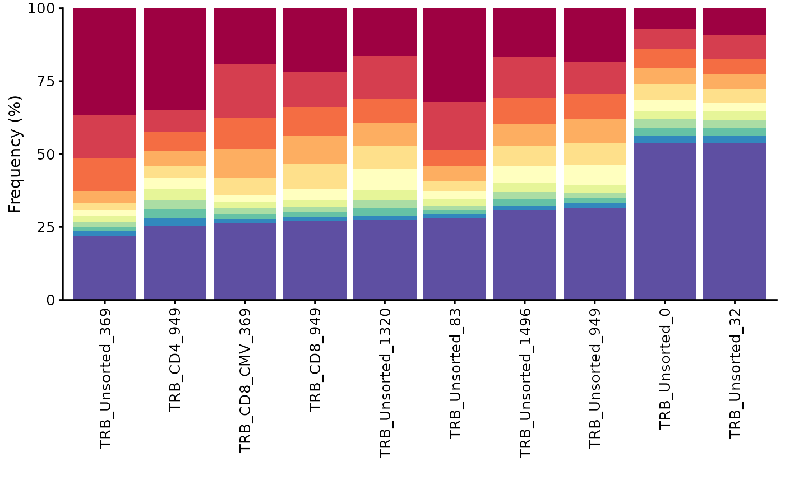
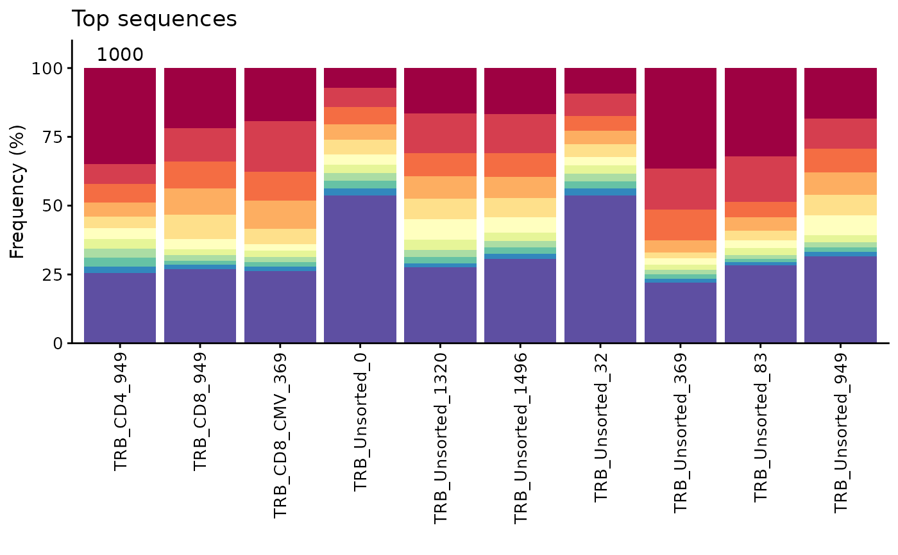

Create a cumulative frequency bar plot of a specified number of top sequences.
Arguments
- study_table
A study tibble imported using the LymphoSeq2 function
readImmunoSeq()orproductiveSeq()- top
The number of top sequences to be colored in the bar plot. All other, less frequent sequences are colored violet.
Details
The plot is made using the package ggplot2 and can be reformatted using ggplot2 functions. See examples below.
See also
An excellent resource for examples on how to reformat a ggplot can be found in the R Graphics Cookbook online (http://www.cookbook-r.com/Graphs/).
Examples
file_path <- system.file("extdata", "TCRB_sequencing",
package = "LymphoSeq2")
study_table <- LymphoSeq2::readImmunoSeq(path = file_path, threads = 1)
#> Dataset Analysis:
#> Files: 10, Total: 0.00 GB, Largest: 0.0 MB
#> Available memory: 11.3 GB
amino_table <- LymphoSeq2::productiveSeq(study_table = study_table,
aggregate = "junction_aa")
LymphoSeq2::topSeqsPlot(study_table = amino_table, top = 10)

# Display the number of sequences at the top of bar plot and add a title
n <- as.character(nrow(study_table))
LymphoSeq2::topSeqsPlot(study_table = amino_table, top = 10) +
ggplot2::annotate("text", x = 1:length(n), y = 105, label = n,
color = "black") +
ggplot2::expand_limits(y = c(0, 110)) + ggplot2::ggtitle("Top sequences") +
ggplot2::scale_x_discrete(limits = names(n))
#> Scale for x is already present.
#> Adding another scale for x, which will replace the existing scale.
